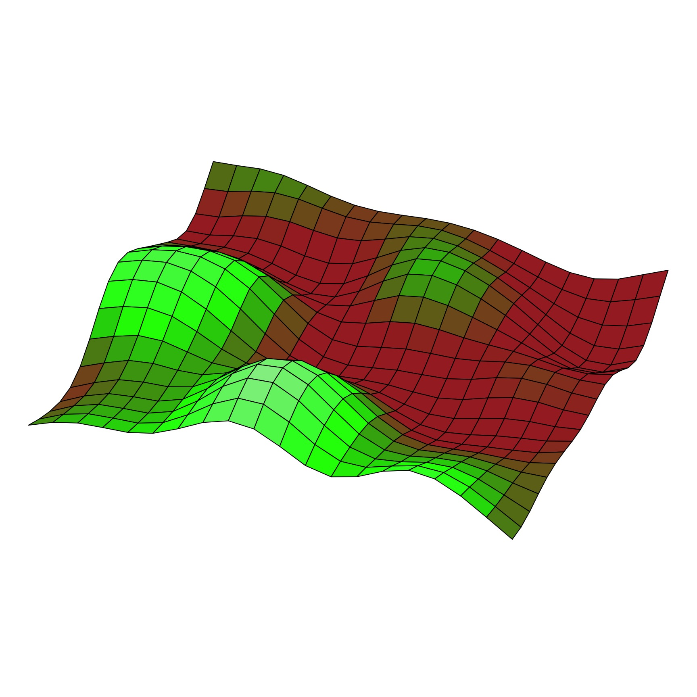
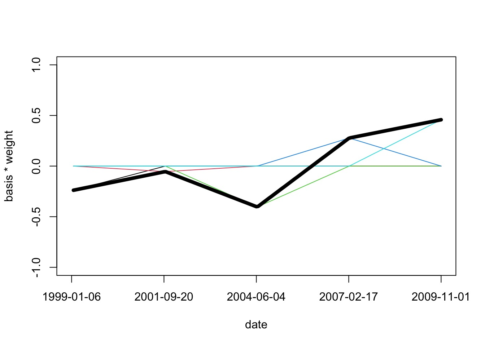
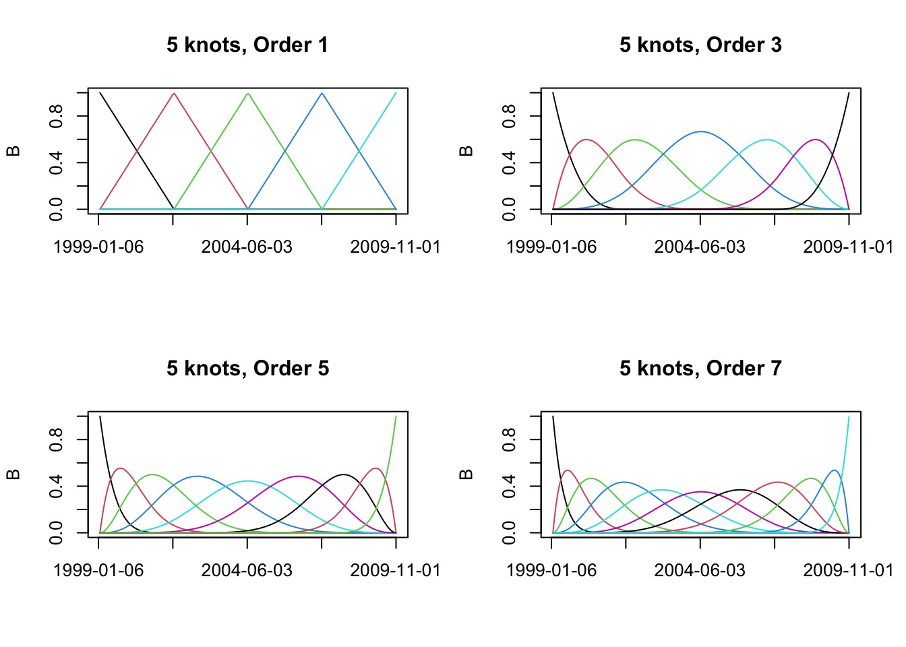

boreal <- read.table("./data/06/Boreality.txt", header=T) |>
mutate(NDVI_s = standardize(NDVI),
Wet_s = standardize(Wet))
ndvi_nospatial <- alist(
NDVI_s ~ dnorm(mu, sigma),
mu <- alpha + beta * Wet_s,
alpha ~ dnorm(0,1),
beta ~ dnorm(0,1),
sigma ~ dexp(2)
)
# fit
ndvi_nospatial_fit <- quap(ndvi_nospatial, boreal)
# residuals
boreal_fit <- linpred_draws(ndvi_nospatial_fit, boreal, ndraws = 1e3) |>
mutate(.residuals = NDVI_s - .value) |>
group_by(x, y, point) |>
summarize(.residuals = mean(.residuals))Dealing with Autocorrelation
Are Ecological Global Change Analyses Mostly Wrong?
Are Ecological Global Change Analyses Mostly Wrong?
An Autocorrelated Adventure
Intro to Autocorrelation
Autocorrelation in Space with Gaussian Processes
Autocorrelation due to Phylogeny
Splines and Autocorrelation in Time
Measurements Are Often Distributed in Continuous, Not Discrete, Space
Naive Model
Wetness -> NDVI
Spatial Autocorrelation in Residuals
What About Time?

Autocorrelation of Residuals at Different Time Lags
Phylogenetic Autocorrelation
Phylogenetically Correlated Residuals
Considering Correlation: Consider sampling for greeness
Modeling Greeness with a Random Intercept
Likelihood
\(Green_i \sim Normal(\mu_{green}, \sigma_{green})\)
Data Generating Process
\(\mu_{green} = \overline{a} + a_{patch}\)
\(a_{patch} \sim dnorm(0, \sigma_{patch})\)
We Think in Terms of a Continuous Correlation Matrices of Residuals
\[ \epsilon_{ij} = \rho \epsilon_{j} + \zeta_{i}\]
which produces
\[cor(\epsilon) = \begin{pmatrix} 1 & \rho_{12} &\rho_{13} \\ \rho_{12} & 1& \rho_{23}\\ \rho_{13} & \rho_{23} & 1 \end{pmatrix}\]
For a MVN, We Use the Covariance Matrix
\[K_{ij} = \begin{pmatrix} \sigma_1^2 & \sigma_1\sigma_2 &\sigma_1\sigma_3 \\ \sigma_1\sigma_2 & \sigma_2^2& \sigma_2\sigma_3\\ \sigma_1\sigma_3 & \sigma_2\sigma_3 & \sigma_3^2 \end{pmatrix}\]
But: what is the function that defines \(\sigma_i\sigma_j\) based on the distance between i and j?
Different Shapes of Autocorrelation

Introducing Gaussian Processes
A GP is a random process creating a multivariate normal distribution between points where the covariance between points is related to their distance.
\[a_{patch} \sim MVNorm(0, K)\]
\[K_{ij} = F(D_{ij})\]The Squared Exponential Function(kernel)
\[K_{ij} = \eta^2 exp \left( -\frac{D_{ij}^2}{2 \mathcal{l}^2} \right)\]
where \(\eta^2\) provides the scale of the function and \(\mathcal{l}\) the timescale of the process
The Squared Exponential Covariance Function (kernel)
A surface from a Squared Exponential GP
Squared Exponential v. Linear Dropoff
Other Covariance Functions
Periodic: \(K_{P}(i,j) = \exp\left(-\frac{ 2\sin^2\left(\frac{D_{ij}}{2} \right)}{\mathcal{l}^2} \right)\)
Ornstein–Uhlenbeck: \(K_{OI}(i,j) = \eta^2 exp \left( -\frac{|D_{ij}|}{\mathcal{l}} \right)\)
Quadratic \(K_{RQ}(i,j)=(1+|d|^{2})^{-\alpha },\quad \alpha \geq 0\)
Note, all of the above can be folded into 1D or 3D, etc autocorrelation
AR1, AR2, etc., are just modifications of the above
The Squared Exponential Function in rethinking (with cov_GPL2)
\[K_{ij} = \eta^2 exp \left( -\frac{D_{ij}^2}{2 \mathcal{l}^2} \right)\]
Rethinking:
\[K_{ij} = \eta^2 exp \left( -\rho^2 D_{ij}^2 \right) + \delta_{ij}\sigma^2\]
Operationalizing a GP
Let’s assume a Squared Exponential GP with an \(\eta^2\) and \(\mathcal{l}\) of 1. Many possible curves:
Operationalizing a GP
And actually, on average
But once we add some data…
Pinching in around observations!
Warnings!
Not mechanistic!
But can incorporate many sources of variability
- e.g., recent analysis showing multiple GP underlying Zika for forecasting
Can mix mechanism and GP
An Autocorrelated Adventure
Intro to Autocorrelation
Autocorrelation in Space with Gaussian Processes
Autocorrelation due to Phylogeny
Splines and Autocorrelation in Time
Oceanic Tool Use

culture population contact total_tools mean_TU lat lon lon2 logpop
1 Malekula 1100 low 13 3.2 -16.3 167.5 -12.5 7.003065
2 Tikopia 1500 low 22 4.7 -12.3 168.8 -11.2 7.313220
3 Santa Cruz 3600 low 24 4.0 -10.7 166.0 -14.0 8.188689
4 Yap 4791 high 43 5.0 9.5 138.1 -41.9 8.474494
5 Lau Fiji 7400 high 33 5.0 -17.7 178.1 -1.9 8.909235
6 Trobriand 8000 high 19 4.0 -8.7 150.9 -29.1 8.987197Distances between islands
Malekula Tikopia Santa Cruz Yap Lau Fiji Trobriand Chuuk Manus
Malekula 0.000 0.475 0.631 4.363 1.234 2.036 3.178 2.794
Tikopia 0.475 0.000 0.315 4.173 1.236 2.007 2.877 2.670
Santa Cruz 0.631 0.315 0.000 3.859 1.550 1.708 2.588 2.356
Yap 4.363 4.173 3.859 0.000 5.391 2.462 1.555 1.616
Lau Fiji 1.234 1.236 1.550 5.391 0.000 3.219 4.027 3.906
Trobriand 2.036 2.007 1.708 2.462 3.219 0.000 1.801 0.850
Chuuk 3.178 2.877 2.588 1.555 4.027 1.801 0.000 1.213
Manus 2.794 2.670 2.356 1.616 3.906 0.850 1.213 0.000
Tonga 1.860 1.965 2.279 6.136 0.763 3.893 4.789 4.622
Hawaii 5.678 5.283 5.401 7.178 4.884 6.653 5.787 6.722
Tonga Hawaii
Malekula 1.860 5.678
Tikopia 1.965 5.283
Santa Cruz 2.279 5.401
Yap 6.136 7.178
Lau Fiji 0.763 4.884
Trobriand 3.893 6.653
Chuuk 4.789 5.787
Manus 4.622 6.722
Tonga 0.000 5.037
Hawaii 5.037 0.000What if I needed to make a distance matrix?
1 2 3 4 5 6 7
2 4.205948
3 5.797413 3.224903
4 39.115214 37.652756 34.444884
5 10.692053 10.754069 13.978913 48.371893
6 18.257053 18.258423 15.231874 22.250393 28.650305
7 28.539446 26.152055 23.129418 13.662357 36.500137 16.115210
8 25.019992 24.158849 20.946837 14.560220 34.882660 7.717513 10.599057
9 342.735029 344.115112 341.361524 314.800540 353.317336 326.339486 328.049082
10 325.121593 325.994172 323.052503 293.884076 335.811629 307.831464 307.454208
8 9
2
3
4
5
6
7
8
9 322.665802
10 303.298945 45.534273Well, convert lat/lon to UTM first, and to matrix after dist
Our GP Model
Likelihood
\(Tools_i \sim Poisson(\lambda_i)\)
Data Generating Process \(log(\lambda_i) = \alpha + \gamma_{society} + \beta log(Population_i)\)
Gaussian Process \(\gamma_{society} \sim MVNormal((0, ....,0), K)\)
\(K_{ij} = \eta^2 exp \left( -\rho^2 D_{ij}^2 \right) + \delta_{ij}(0.01)\)
Priors
\(\alpha \sim Normal(0,10)\)
\(\beta \sim Normal(0,1)\)
\(\eta^2 \sim Exponential(2)\)
\(\rho^2 \sim Exponential(0.5)\)
Our model
Kline2$society <- 1:nrow(Kline2)
k2mod <- alist(
# likelihood
total_tools ~ dpois(lambda),
# Data Generating Process
log(lambda) <- a + k[society] + bp*logpop,
# Gaussian Process
vector[10]:k ~ multi_normal( 0 , SIGMA ),
matrix[10,10]:SIGMA <- cov_GPL2( Dmat , etasq , rhosq , 0.01 ),
# Priors
a ~ dnorm(0,10),
bp ~ dnorm(0,1),
etasq ~ dexp(2),
rhosq ~ dexp(0.5)
)GPL2
g[society] ~ cov_GPL2( Dmat , etasq , rhosq , 0.01)
Note that we supply a distance matrix
cov_GPL2explicitly creates the MV Normal density, but only requires parameters
Fitting - a list shall lead them
- We have data of various classes (e.g. matrix, vectors)
- Hence, we use a list
- This can be generalized to many cases, e.g. true multilevel models
Did it converge?
Did it fit?
What does it all mean?
mean sd 5.5% 94.5% rhat ess_bulk
a 1.2683090 0.96101153 -0.18077277 2.8894966 1.014524 325.8624
bp 0.2486083 0.09600888 0.09306479 0.3967548 1.011408 410.5729
etasq 0.2039891 0.22047529 0.02702730 0.6232529 1.014706 261.0889
rhosq 1.3945047 1.65297194 0.07653043 4.7089869 1.012138 406.8024What is our covariance function by distance?
#get samples
k2_samp <- tidy_draws(k2fit)
#covariance function
cov_fun_rethink <- function(d, etasq, rhosq){
etasq * exp( -rhosq * d^2)
}
#make curves
decline_df <- crossing(data.frame(x = seq(0,10,length.out=200)),
data.frame(etasq = k2_samp$etasq[1:100],
rhosq = k2_samp$rhosq[1:100])) %>%
dplyr::mutate(covariance = cov_fun_rethink(x, etasq, rhosq))Covariance by distance
Correlation Matrix
Putting it all together…
Putting it all together…
An Autocorrelated Adventure
Intro to Autocorrelation
Autocorrelation in Space with Gaussian Processes
Autocorrelation due to Phylogeny
Splines and Autocorrelation in Time
What About Phylogenetic Autocorrelation?
Does Primate Group Size Select for Brain Size?
Possibilities for Incorporating Relatedness
\[group \ size \sim MVN(\mu, \Sigma)\\ \mu_i = \alpha + \beta_G G_i + \beta_M M_i\]
Nothing: \(\Sigma = \sigma^2 I\)
Linear/Brownian: \(\Sigma_{ij} = \rho_{ij} \sigma^2\)
OU/Linear GP: \(K_{ij} = \eta^2 exp \left( -\rho^2 D_{ij} \right)\)
Data Prep
data(Primates301)
dstan <- Primates301 |>
mutate(name = as.character(name)) |>
filter(!is.na(group_size),
!is.na(body),
!is.na(brain)
)
# for matrices
spp_obs <- dstan$name
# A list of data and an Identity Matrix
dat_list <- list(
N_spp = nrow(dstan),
M = standardize(log(dstan$body)),
B = standardize(log(dstan$brain)),
G = standardize(log(dstan$group_size)),
Imat = diag(nrow(dstan)) )No Correlation
Making a Correlation Distance Matrix
library(ape)
#make phylo cov/distance matrices
tree_trimmed <- keep.tip( Primates301_nex, spp_obs )
Rbm <- corBrownian( phy=tree_trimmed )
V <- vcv(Rbm)
Dmat <- cophenetic( tree_trimmed )
# put species in right order
dat_list$V <- V[ spp_obs , spp_obs ]
# convert to correlation matrix
dat_list$R <- dat_list$V / max(V)The Correlation Matrix
Brownian Correlation
OU/Linear GP Correlation
# add scaled and reordered distance matrix
dat_list$Dmat <- Dmat[ spp_obs , spp_obs ] / max(Dmat)
ou_gp_mod <- ulam(
alist(
#likelihood
B ~ multi_normal( mu , SIGMA ),
# DGP
mu <- a + bM*M + bG*G,
# Autocorr
matrix[N_spp,N_spp]: SIGMA <- cov_GPL1( Dmat , etasq , rhosq , 0.01 ),
#priors
a ~ normal(0,1),
c(bM,bG) ~ normal(0,0.5),
etasq ~ half_normal(1,0.25),
rhosq ~ half_normal(3,0.25)
), data=dat_list , chains=4 , cores=4, log_lik = TRUE)Which Model Fits Best?
NOTE: Does not currently work due to working with matrices. Standby!
Comparing G
mean sd 5.5% 94.5% rhat ess_bulk
no_phylo bG 0.12256875 0.02265879 0.085101822 0.15983441 1.000883 1195.5750
brownian bG 0.02405600 0.02026626 -0.008841488 0.05663509 1.035008 110.6589
ou_gp_mod bG 0.04975294 0.02311785 0.012833085 0.08657639 1.001296 2345.3181An Autocorrelated Adventure
Intro to Autocorrelation
Autocorrelation in Space with Gaussian Processes
Autocorrelation due to Phylogeny
Splines and Autocorrelation in Time
Kelp from spaaaace!!!

Cavanaugh et al. 2011, Bell et al. 2015
The Mohawk Transect 3 300m Timeseries
Polynomials Only Go So Far
We Can Use Gaussian Processes…

A Gaussian Process is a General Case of a Spline in a Generalized Additive Model
A Spline with many knots converges to a Gaussian Process
How do we Make a Spline: Start
We start with a synthetic variable evenly along the X-axis spread using “knots”
How do we Make a Spline: Weighting
How do we Make a Spline: Sum Weighted Basis Set
Predictions from Spline
B-Splines with Different Knots
B-Splines of Different Degrees to Control “Wiggliness”
Splines Basis Sets of Different Types
And More…
The GAM Formulation as a Model
Likelihood: \[y_i\sim \mathcal{N}(\mu_i, \sigma^{2})\]
Data Generating Process:
\[g(\mu_i) = f(x_i)\]
\[ f(x_i) = \sum_{j=1}^{d}\gamma_jB_j(x_i)\]
\(B_j(x)\) is your basis function with \(d\) elements.
\(\gamma_j\) is a weight for each element of the basis set.
You can have other linear predictors
The Cental Idea Behind GAMs

Basis Functions: You’ve seen them before
\[f(X) = \sum_{j=1}^{d}\gamma_jB_j(x)\]
Linear Regression as a Basis Function:
\[d = 1\]
\[B_j(x) = x\]
So…. \[f(x) = \gamma_j x\]
Basis Functions: You’ve seen them before
\[f(X) = \sum_{j=1}^{d}\gamma_jB_j(x)\]
Polynomial Regression as a Basis Function:
\[f(x) = \gamma_0 + \gamma_1\cdot x^1 \ldots +\gamma_d\cdot x^d\]
Basis Functions in GAMs
You can think of every \(B_j(x)\) as a transformation of x
In GAMs, we base j off of K knots
A knot is a place where we split our data into pieces
- We optimize knot choice, but let’s just split evenly for a demo
For each segment of the data, we fit a seprate function, then add them together
A Model for the Z-Transformed Kelp Time Series
Likelihood: \[Kelp\:Std_i \sim \mathcal{N}(\mu_i, \sigma)\]
- We Z-Transform for ease of fit and to not worry about 0 problem
Data Generating Process: \[\mu_i = \alpha + \sum_{d=1}^D w_d B_{d,i}\]
- Here, remember, B is a transform of Date
Priors: \[\alpha \sim \mathcal{N}(0, 2) \\ w_d \sim \mathcal{N}(0, 1) \\ \sigma \sim \mathcal{Exp}(1)\]
Building the Basis Set with 30 knots
# filter NA as it causes problems with matrix multiplication
d <- ltrmk3 |> filter(!is.na(X300m))
d$k_s <- scale(d$X300m)
# make a knot list based on date with 30 knots
knot_list <- seq(min(d$Date), max(d$Date), length.out=30)
# build the basis set
B <- bs(d$Date,
knots=knot_list[-c(1,num_knots)],
degree=1,
intercept=TRUE )The Model in Rethinking
kelp_spline_mod <- alist(
# Likelihood
K ~ dnorm(mu , sigma),
# DGP
mu <- a + B %*% w,
# Priors
a ~ dnorm(0, 4),
w ~ dnorm(0, 1),
sigma ~ dexp(1)
)
# Fit with start values to give dimensions
# and a list to contain different data types
kelp_spline_fit <- quap(
kelp_spline_mod,
data=list( K=d$k_s , B=B) ,
start=list( w=rep( 0 , ncol(B) ) ) )What did it all mean?
What did it all mean?
Space, Time, And All of That
Fundamentally, we assume things close to each other are more similar than things that are far apart.
If our predictors account for all variation, this might not be necessary.
But, if we wish to account for other correlated drivers or autocorrelation in residuals, we have many options
We can model K, the variance-covariance matrix with a MVN process.
We can use a spline (computationally faster) that will approximate a Gaussian Process